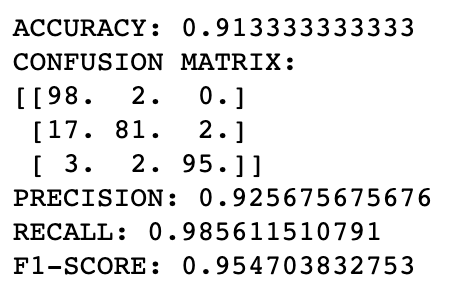
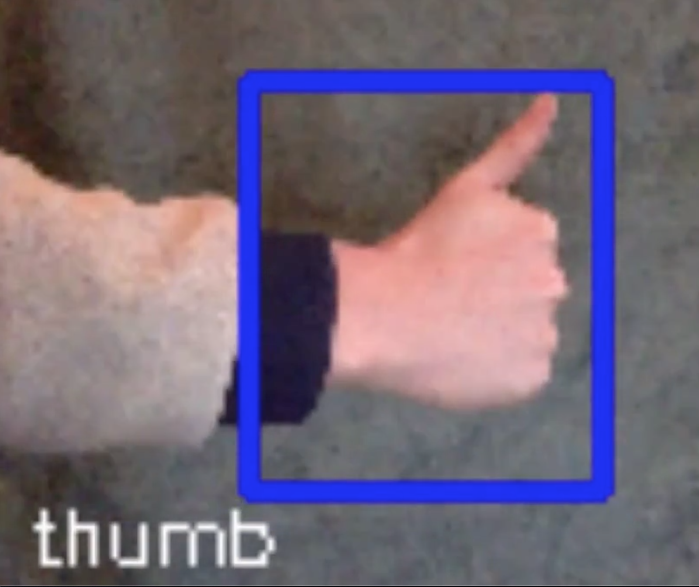
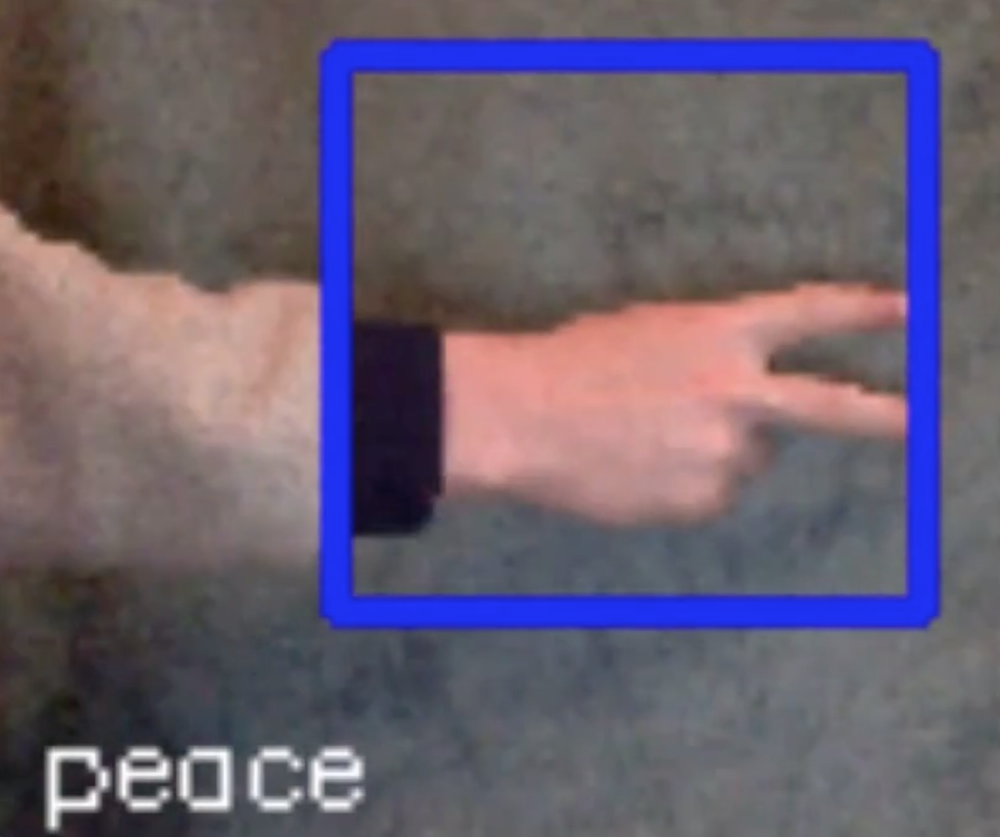
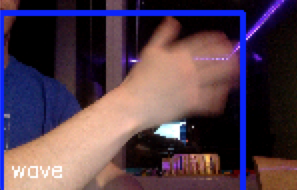
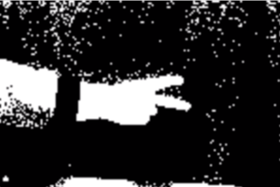
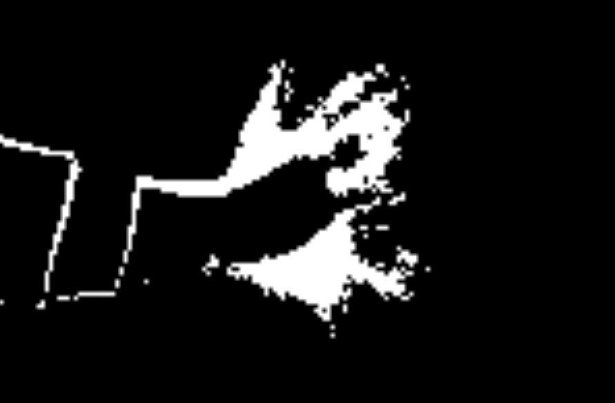
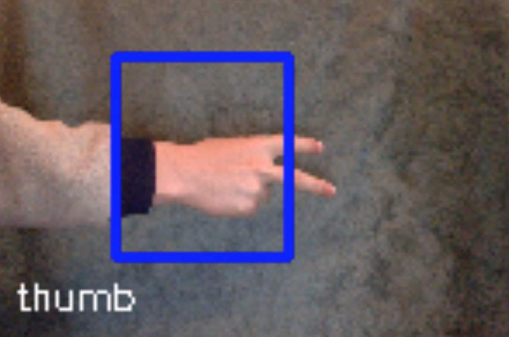
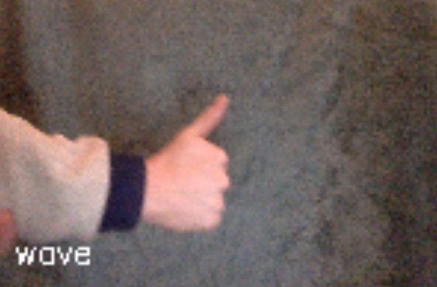

Problem Definition
For this assignment we were asked to develop a computer vision system that is able to recognize three hand gestures. The gestures could either be static (a non-moving hand gesture) or dynamic (a moving hand gesture). To accomplish this we needed to implement algorithms that both identified the gestures and was able to distiguish between the different gestures. After doing so, we had to indicate what gesture was being seen by the computer at any given time from a video stream. We also had to use at least four different computer vision techniques to accomplish this assignment. This a great assignment because it will show how computer vision works, and how it can be applied in different fields. For this problem I will assume the user is caucasian, since that was the only test subjects I will have available. I anticipate the dynamic gesture to be difficult, as well as distinguishing between the two static gestures.
Method and Implementation
To implement my computer vision I first decided on the three gestures thumbs up, peace sign, and a wave. Fro the program I decided to use frame-to-frame differencing, motion energy templating, skin-color detection, and template matching. The motion energy templating is used in combination with the frame-toframe differencing. I first took a few template photos of the different gestures for the template matching. From there I would read in those images in put them in a gesture array. Then I would consecitively scan in the frames of the video stream in do the template matching for the two static gestures. If the motion energy templating fell lower than a certain threshold (using root mean squared) then the static gestures were tested, otherwise it scanned for the wave. If there was enough motion the wave selected as the gesture. If not, then I would do template matching. I used skin-color detection for both the templates and the current frame so the hand was isolated. From there, which ever template matched the most was selected and a rectangle was drawn around it, and the name of the gesture was displayed on the screen.
I made two functions for my implementation. One to take in the gestures and one to do the gesture matching. In this process I read in image files and converted them to Gesture objects, which has a name and a np.array image. The second function did the gesture matching. It is described above.
Experiments
The experiments that I ran included trying all three gestures infront of my web cam from both sides of the screen and at different angles. I also used different background to see if that would make a difference. I ended up running 100 different tests per gesture, which included taking my hand away from the screen and then putting the gesture in front of the screen with different background and orientations.
My evaluation metrics included if the gesture was correctly matched and how quickly it was matched.
Results
After running all my tests I came out with mostly positive results. THe right gesture was almost always identified. I did however find that the thumb gesture was identified most acurrately at 98%. The peace gesture was mostly accurate coming out to 81%. The waving was also very succesful coming out at 95%.
Results | ||
| Results | Image | |
| Data (prediction on top, actual on side) |  | |
| Thumbs up |  | |
| Peace Sign |  | |
| Wave |  | |
| Thumb Skin Detection | ||
| Peace sign Skin Detection |  | |
| Wave Skin Detection |  | |
| Peace sign failure |  | |
| Wave failure |  | |
Discussion
Discuss your method and results:
- The strengths of my method were definetly the motion detection because I only tested for one dynamic gesture makeing the disguishing between static and dyanmic a lot easier. The weaknesses included distinguishing between the thumbs up and peace sign. Sometimes my peace sign was not spread out enough to distiguish the two fingers, which made my system not detect a peace sign and instead a thumbs up. This is mainly due to a thumbs up having a fist that is similar to a hand.
- Overall my results were generally very successful and I was happy with the outcome. I expected to be around 60% successful so having 81% be the lowest accuracy for a gesture, I was very pleased.
- In the future I would add more template pictures in different orientations to more accurately identify the gestures. I would also try to get the box around the gestures more precise.
Conclusions
This was a great assignment that helped me learn about computer vision and what goes into it. While implementing my algorithms I figured out the best and worst ways to identify the gestures and changed around my algorithms a lot until I got the best results. Overall it was a very successful assignment and a great experience to have.
Credits and Bibliography
https://docs.opencv.org/2.4/index.html https://opencv-python-tutroals.readthedocs.io/en/latest/py_tutorials/py_imgproc/py_template_matching/py_template_matching.html